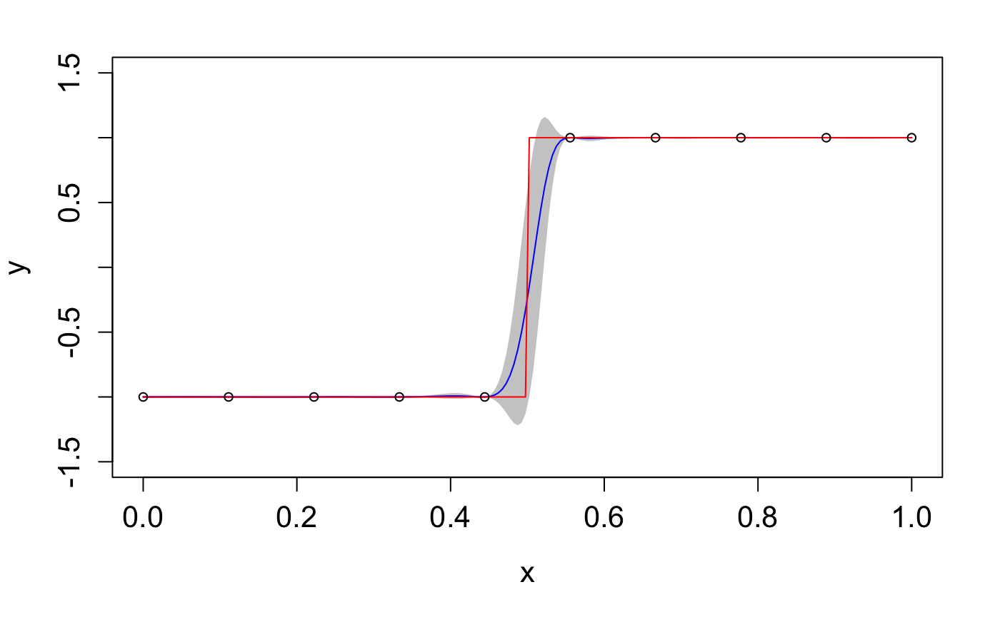

.badCode {
background-color: red;
}This vignette shows how to use the package to emulate a step function with a three-layered DGP structure.
Summarize the untrained model
summary(m)
## +-----------+----------+------------------+-----------------+---------------+-------------------+------------+-------------------+
## | Layer No. | Node No. | Type | Length-scale(s) | Variance | Nugget | Input Dims | Global Connection |
## +-----------+----------+------------------+-----------------+---------------+-------------------+------------+-------------------+
## | Layer 1 | Node 1 | GP (Squared-Exp) | [1.000] | 1.000 (fixed) | 1.000e-06 (fixed) | [1] | No |
## | Layer 2 | Node 1 | GP (Squared-Exp) | [1.000] | 1.000 (fixed) | 1.000e-06 (fixed) | [1] | No |
## | Layer 3 | Node 1 | GP (Squared-Exp) | [1.000] | 1.000 | 1.000e-06 (fixed) | [1] | No |
## +-----------+----------+------------------+-----------------+---------------+-------------------+------------+-------------------+
## 1. 'Input Dims' presents the indices of GP nodes in the feeding layer whose outputs are used as the input to the current GP.
## 2. 'Global Connection' indicates the dimensions (i.e., column numbers) of the global input data that are used as additional input dimensions ## to the current GP.Train the model
m_trained <- train(m)
## Iteration 500: Layer 3: 100%|██████████| 500/500 [00:04<00:00, 106.14it/s]Summarize the trained model for emulation
summary(emu)
## ╒═════════════╤════════════╤══════════════════╤═══════════════════╤═══════════════╤═══════════════════╤══════════════╤═════════════════════╕
## │ Layer No. │ Node No. │ Type │ Length-scale(s) │ Variance │ Nugget │ Input Dims │ Global Connection │
## ╞═════════════╪════════════╪══════════════════╪═══════════════════╪═══════════════╪═══════════════════╪══════════════╪═════════════════════╡
## │ Layer 1 │ Node 1 │ GP (Squared-Exp) │ [0.535] │ 1.000 (fixed) │ 1.000e-06 (fixed) │ [1] │ No │
## ├─────────────┼────────────┼──────────────────┼───────────────────┼───────────────┼───────────────────┼──────────────┼─────────────────────┤
## │ Layer 2 │ Node 1 │ GP (Squared-Exp) │ [0.957] │ 1.000 (fixed) │ 1.000e-06 (fixed) │ [1] │ No │
## ├─────────────┼────────────┼──────────────────┼───────────────────┼───────────────┼───────────────────┼──────────────┼─────────────────────┤
## │ Layer 3 │ Node 1 │ GP (Squared-Exp) │ [0.953] │ 0.307 │ 1.000e-06 (fixed) │ [1] │ No │
## ╘═════════════╧════════════╧══════════════════╧═══════════════════╧═══════════════╧═══════════════════╧══════════════╧═════════════════════╛
## 1. 'Input Dims' presents the indices of GP nodes in the feeding layer whose outputs are used as the input to the current GP.
## 2. 'Global Connection' indicates the dimensions (i.e., column numbers) of the global input data that are used as additional input dimensions to the current GP.Make predictions
res <- predict(emu, x = test_x)Plot the emulation results
mu <- res$mean
sd <- sqrt(res$var)
up <- mu + 2*sd
lo <- mu - 2*sd
plot(test_x, mu, type='l',col='blue',xlab='x', cex.axis=1.3,cex.lab=1.3, ylab='y',ylim=c(-1.5,1.5))
polygon(c(test_x,rev(test_x)),c(up,rev(lo)),col='grey80',border=F)
lines(test_x,mu,type='l',col='blue')
lines(test_x,test_y,type='l',col='red')
lines(X,Y,type='p',cex=0.8)